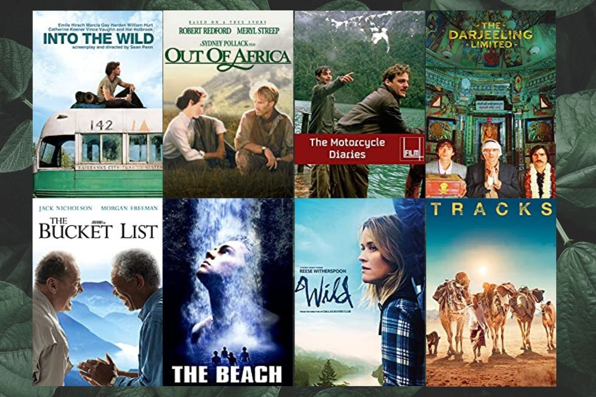
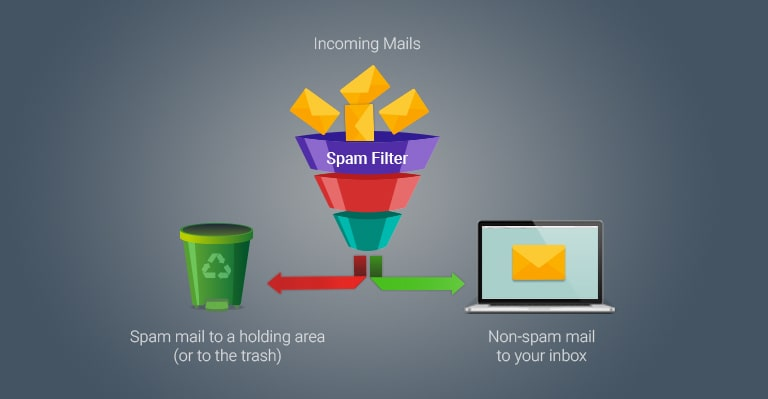
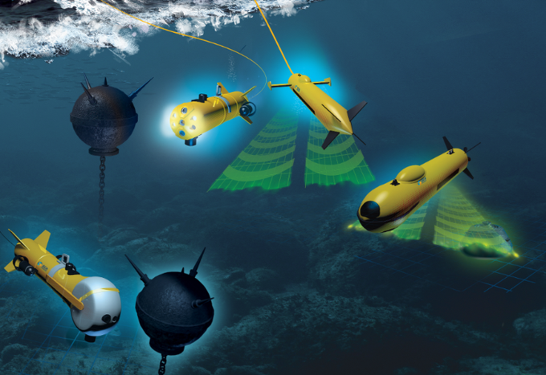
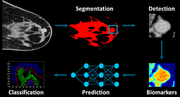

In this group project, we aim to propose an Expense Prediction System for Singapore tourists based on several criteria like
the length of stay, hotel preferences, number of companions, travel mode, shopping expenses, and so on, for those who wish to
visit Singapore. With the use of machine learning models in the domain of tourism, algorithms like SVM, Naive Bayesian,
Linear Regression, Random Forest, Decision Tree, KNN, and SVR, are used to predict tourist expenses.
The dataset contains 8887 rows and 48 columns, based on records from 2014-2015 of Indonesian tourists who visited Singapore.
The Iris flower identifier project is a machine learning project that aims to classify iris flowers based on
their physical characteristics. The iris dataset, which is widely used in machine learning, contains
150 samples of iris flowers with four features: sepal length, sepal width, petal length, and petal width.
Each sample is labeled with one of three species of iris: Iris setosa, Iris versicolor, and Iris virginica.
The goal of this project is to train a machine learning model to accurately identify the species
of an iris flower based on its physical characteristics. This can be done using various algorithms such
as decision trees, k-nearest neighbors, or support vector machines.

The movie recommendation system project using cosine similarity method in ML would require a
good understanding of machine learning techniques and data preprocessing methods.
Content-based methods are
based on the similarity of movie attributes. Using this type of recommender system, if a user watches one
movie, similar movies are recommended. For example, if a user watches a comedy movie starring Adam Sandler,
the system will recommend them movies in the same genre or starring the same actor, or both. With this in
mind, the input for
building a content-based recommender system is movie attributes.
Our motto is to reduce airline accidents as low as possible. So, we can find a way to avoid such
accidents with the previous airline crash or failure data. we use this data to prevent such same
cases in future. this can save a lot of lives and money. automatic the severity of any aeroplane
accident help gets an idea of what is happening. so that, things can be taken care of. Data such as Safety
Score, Days Since Inspection, Total Safety Complaints, Control Metric, Turbulence In g-forces, Cabin
Temperature, Accidents Type Code, Max Elevation, Violations,
Adverse Weather Metric with these data, predict the severity of the accident .

Spam has become a major problem nowadays, with Rapid growth of internet users,
Email spams is also increasing. People are using them for illegal and unethical conducts,
phishing and fraud. Sending malicious link through spam emails which can harm our system and can
also seek in into your system. Creating a fake profile and email account is much easy for the spammers,
they pretend like a genuine person in their spam emails, these spammers target those peoples who are not
aware about these frauds. So, it is needed to Identify those spam mails which are fraud, this project will
identify those spam by using techniques of machine learning

Machine learning-based tactics, and deep learning-based approaches have applications in detecting sonar
signals and hence targets.
Fourier transform, wavelet transform, limit cycle, etc. are signal processing methods applicable for
an underwater acoustic signal. Machine Learning enables the processing of sonar signals and target detection.
It is a subfield of artificial intelligence which tells machines how to manipulate data more proficiently.
The three stages of Machine Learning are taking some data as input, extracting features, and predicting new
patterns. The most common ML algorithms in this field are Logistic Regression, support vector machine,
principal component analysis, k-nearest neighbors (KNN), C-means clustering, etc.
The body temperature and the heartbeat will rise when we
exercise or workout. The variables that we take here such as
time scale for which the individual carrying out the workout
training and what is the average beats per minute and then
the temperature. Then we additionally take the height,
weight, gender and age of the person to predict how tons
energy the person may be burning.
A machine learning XGBoost regressor algorithm and linear
regression algorithms are used to predict calories burned
depends on the workout duration,body temperature,
height,weight and age of the person

This analysis aims to observe which features are most helpful in predicting malignant
or benign cancer and to see general trends that may aid us in model selection and hyper parameter selection.
The goal is to classify whether the breast cancer is benign or malignant. To achieve this i have used machine
learning classification methods to fit a function that can predict the discrete class of new input.
The data scientists at BigMart have collected 2013 sales data for 1559 products across 10 stores in different cities. Also, certain attributes of each product and store have been defined. The aim is to build a predictive model and predict the sales of each product at a particular outlet.
Using this model, BigMart will try to understand the properties of products and outlets which play a key role in increasing sales.

Vital factor in red wine certification and quality assessment is physicochemical tests,
which are laboratory-based and consider factors like acidity, pH level, sugar, and
other chemical properties. The red wine market would be of interest if the human quality of
tasting can be related to wine’s chemical properties so that certification and quality assessment and
assurance processes are more controlled. This project aims to determine which features are the best quality
red wine indicators and generate insights into each of these factors to our model’s red wine quality.

A primary objective of this project is to estimate used car prices by using attributes that are highly
correlated with a label (Price). To accomplish this, data mining technology has been employed. Null,
redundant, and missing values were removed from the dataset during pre-processing. In this supervised
learning study, three regressors (Random Forest Regressor, Linear Regression, and Bagging Regressor)
have been trained, tested, and compared against a benchmark dataset